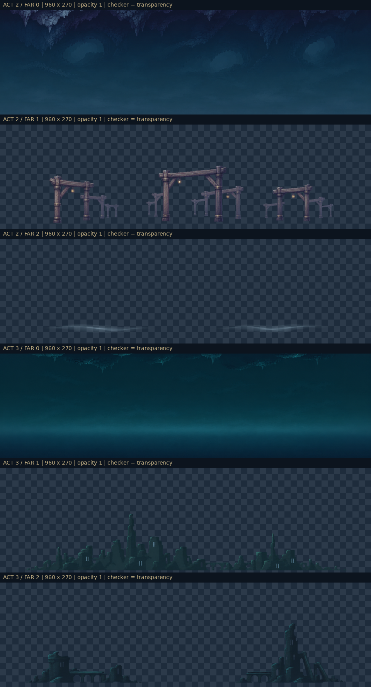
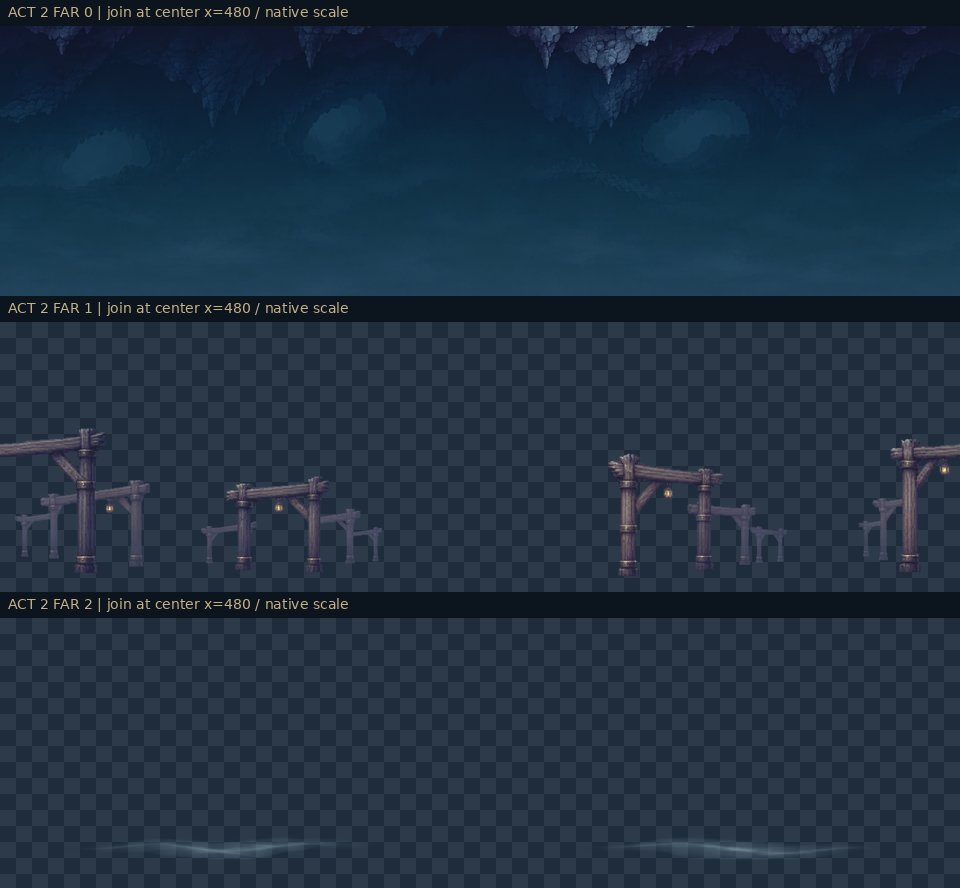
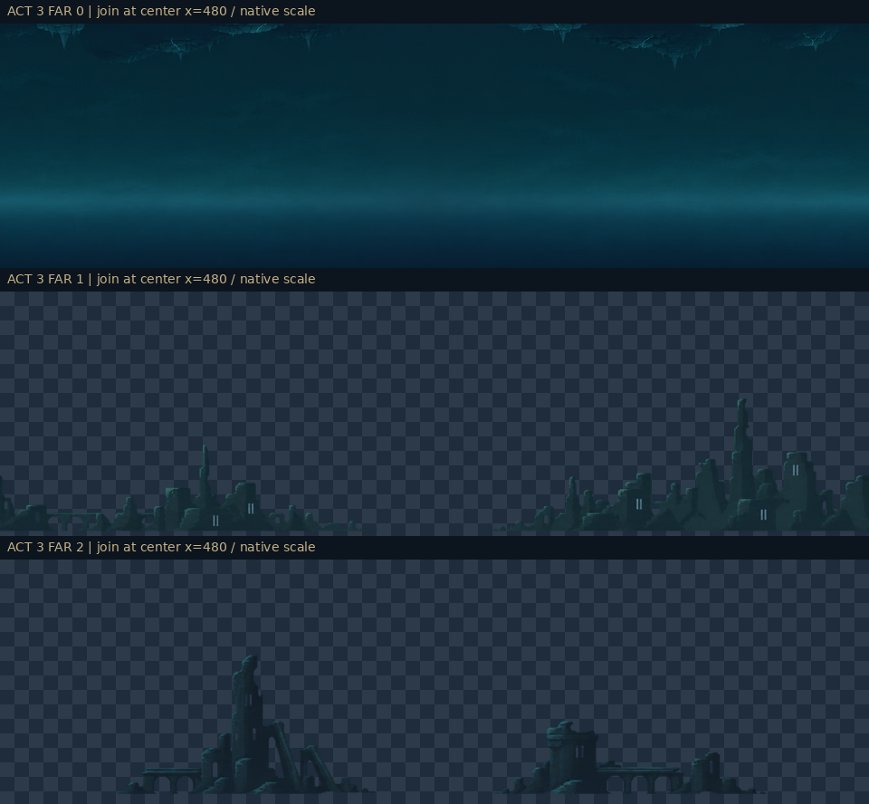

素材用プレビューです。実ゲーム・GPU・Androidの動作確認ではありません。下の動画はCPUで実生成した各240フレーム。HTML自体のブラウザ描画は未検証です。
0
opacity 1 / 0.65 / 0.18 · 視差 0.04 / 0.12 / 0.21
opacity 1 / 0.55 / 0.82 · 視差 0.04 / 0.12 / 0.21



各PNGの正本と設定は manifest.json、取り込み条件は README を参照。素材の下辺は既存地形の後ろへ置いてください。